Séquence protégée
Cette séquence n'est pas encore ouverte, ou tu dois entrer le code d'invitation donné par ton professeur.
P13 — Capsule Classe Inversée n°1
🎯 Objectif de cette capsule
Avant la prochaine séance, lis la fiche, regarde un reportage, puis réponds aux questions. Si tu réussis → tu travailles en autonomie sur une mission avancée en classe.
📖 Fiche — Qu'est-ce que le biomimétisme ?
Définition
Le biomimétisme est une démarche d'innovation qui consiste à s'inspirer du vivant — animaux, plantes, micro-organismes — pour concevoir des objets, matériaux ou systèmes techniques.
« La nature, c'est 3,8 milliards d'années de R&D gratuite. » — Janine Benyus
3 exemples fondateurs
Les 4 familles du biomimétisme
| Famille | Ce qui est copié | Exemple |
|---|---|---|
| FORME | La géométrie, la morphologie | Bec → Shinkansen |
| MATÉRIAU | Les propriétés physiques | Nacre → céramiques |
| COMPORTEMENT | Une stratégie, un processus | Fourmis → GPS |
| SYSTÈME | L'organisation globale | Termitière → Eastgate |
🎬 Ton reportage — Choisis-en UN
Recherche le titre exact sur YouTube ou Lumni :
Quiz de validation — 10 questions
Quiz soumis !
Tes réponses ont bien été transmises à ton professeur.
Si tu obtiens la validation : tu travailleras en autonomie sur une mission avancée pendant que le cours est dispensé aux autres.
P12 — Technologie & Alimentation — Activité 1
Cite un objet technique qui facilite ton alimentation et formule sa fonction d’usage :
Complète le tableau (formuler chaque fonction avec « Le … sert à … ») :
| N° | Objet Technique | Fonction d’usage |
|---|
| N° | Fonction Technique (FT) | Solution Technique (ST) |
|---|---|---|
| FT1 | 1 — Condenseur | |
| FT2 | ||
| FT3 | 3 — Évaporateur | |
| FT4 | Déclencher le compresseur selon la température | |
| FT5 | 5 — Capillaire | |
| FT6 |
| N° | Fonction Technique (FT) | Solution Technique (ST) |
|---|---|---|
| FT7 | ||
| FT8 |
🎯 Bilan de l’activité
En conclusion, les objets techniques évoluent car :
① Partie 1 — Les objets technologiques et notre alimentation
Phase 1b — Exemples d’objets (réponses possibles) :
Phase 1c — Réponses attendues :
② Partie 2 — Fonctionnement du réfrigérateur
| N° | Fonction Technique (FT) | Solution Technique (ST) |
|---|---|---|
| FT1 | Condenser (liquéfier) le fluide frigorigène | 1 — Condenseur |
| FT2 | Comprimer le fluide frigorigène gazeux | 2 — Compresseur |
| FT3 | Vaporiser le fluide et absorber la chaleur intérieure | 3 — Évaporateur |
| FT4 | Déclencher le compresseur selon la température | 4 — Thermostat |
| FT5 | Détendre le fluide et réguler le débit (soupape) | 5 — Capillaire |
| FT6 | Transporter et céder/absorber la chaleur dans le circuit | 6 — Fluide frigorigène |
③ Partie 3 — Réfrigérateur connecté
| N° | Fonction Technique (FT) | Solution Technique (ST) |
|---|---|---|
| FT7 | Afficher l’inventaire et les dates de péremption des aliments | Caméra intérieure + écran tactile |
| FT8 | Permettre le contrôle et la commande à distance | Module Wi-Fi / Application smartphone |
🎯 Bilan
• Les besoins humains changent (modes de vie, confort, santé).
• Les avancées scientifiques ouvrent de nouvelles possibilités.
• Les contraintes économiques poussent à innover.
• Les exigences sociales et environnementales imposent de nouvelles solutions (réduction du gaspillage, développement durable).
P11 — Exercice n°2 — Le diagramme FAST
| Domaine | Compétence évaluée | 1 | 2 | 3 | 4 |
|---|---|---|---|---|---|
| Décrire et caractériser l'organisation interne d'un objet ou d'un système technique et ses échanges avec son environnement | Associer des solutions techniques à une ou des fonctions techniques |
Le diagramme FAST (Functional Analysis System Technique) décompose un objet technique : il montre comment les fonctions techniques et les solutions techniques permettent de réaliser la fonction d'usage de l'objet. Une fonction commence toujours par un verbe à l'infinitif, suivi d'un complément.
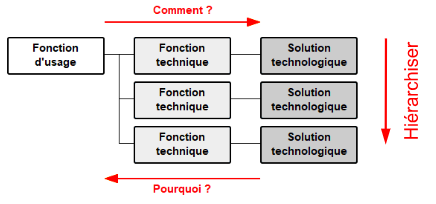
« Comment réaliser cette fonction technique ? »
Grâce à cette solution technique.
« Pourquoi cette solution existe-t-elle ? »
Pour réaliser cette fonction technique.
La ligne du haut est la plus importante ; on descend ensuite vers les fonctions secondaires. L'ordre des lignes compte !
Choisis la bonne réponse dans chaque menu déroulant.
Tu vas analyser le fonctionnement d'un scooter.
Les trois groupes de solutions disponibles sont : le guidon avec la fourche et la roue avant ;
le moteur avec la transmission et la roue arrière ; les poignées avec les câbles et les freins à disque.
Des propositions fausses ont été ajoutées dans les menus : à toi de ne pas te laisser piéger.
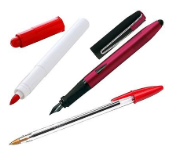
Tu vas analyser le fonctionnement d'un feutre.
Pense à tout ce qui compose l'objet : ce qui dépose l'encre sur la feuille,
ce qui contient l'encre, et ce qui empêche la pointe de sécher.
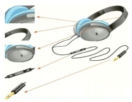
Pour émettre de la musique, un casque audio est composé de plusieurs éléments :
2 coussins en mousse, une arche déformable, 2 haut-parleurs, un potentiomètre, une fiche et un cordon.
Pour l'ordre des lignes, suis le trajet du son dans l'appareil :
par où l'information entre-t-elle, que devient-elle ensuite ?
P11 — Corrigé Exercice n°2
• Association : une paire « fonction technique ↔ solution technique » juste rapporte son point même si elle est placée sur la mauvaise ligne (c'est la lecture Comment ?/Pourquoi ?).
• Hiérarchisation : un point supplémentaire par ligne dont la paire est juste et placée au bon rang. Un élève qui apparie bien mais range mal garde donc tous ses points d'association et perd ceux de hiérarchisation.
P11 — Exercice n°1 — Capteurs, actionneurs & cahier des charges
| Domaine | Compétence évaluée | 1 | 2 | 3 | 4 |
|---|---|---|---|---|---|
| Décrire les liens entre usages et évolutions technologiques des objets et des systèmes techniques | CT1.1 : Collecter, trier et analyser des données |
Utilise la ressource 1 (onglets « Capteurs Actionneurs Interface » et « Exemples »).
Utilise la ressource 2, menu « Étape 1 ».
L'objet technique nommé rend service à en agissant sur pour satisfaire le besoin :
Utilise la ressource 2, menu « Étape 2 ».
À toi de rédiger chaque fonction avec une phrase courte commençant par un verbe à l'infinitif. Une FP (fonction principale) relie deux éléments ; une FC (fonction contrainte) n'en relie qu'un seul.
Utilise la ressource 2, menu « Étape 3 ». Un critère est une caractéristique observable ou mesurable ; un niveau est une valeur chiffrée à respecter.
| Fonctions | Critères | Niveaux |
|---|---|---|
| FP1 Prendre une douche confortablement | ||
|
FP2
|
Couleur de l'eau (donné) |
Vert : quantité d'eau < 30 L Orange : quantité d'eau > 30 L Rouge : quantité d'eau > 50 L |
|
FC3
|
Énergie hydraulique (donné) | Durée de vie supérieure à 5 ans (donné) |
P11 — Corrigé Exercice n°1
(1 pt)
| Fonctions | Critères | Niveaux |
|---|---|---|
| FP1 Prendre une douche confortablement | Débit (1 pt) Type de jet |
8 à 10 litres par minute (1 pt) 3 à 5 types : tonic, pluie, massage… |
| FP2 Diminuer la facture d'eau de l'utilisateur (1 pt) | Couleur de l'eau | Vert : < 30 L • Orange : > 30 L • Rouge : > 50 L |
| FC3 Utiliser une énergie renouvelable (1 pt) | Énergie hydraulique | Durée de vie supérieure à 5 ans |
P12 — Exercice n°1 — Distributeur de croquettes
Regarde la vidéo avant de répondre aux questions ci-dessous. Elle s'ouvrira dans un nouvel onglet.
Après avoir regardé la vidéo de présentation, réponds aux questions suivantes :
Voici les besoins exprimés par le directeur du refuge pour 8 chats :
- Réserve d'eau et de nourriture pour 4 jours
- Entre 100 et 300 g de nourriture par jour et par chat
- 30 centilitres d'eau par jour et par chat
- Contrôle de la prise de nourriture via smartphone (quantité + nombre de prises)
- Reconnaissance faciale individuelle pour chaque chat
- Communication Wi-Fi : norme IEEE 802.11 ah
En tenant compte des besoins du refuge, complète le diagramme des exigences ci-dessous :
Justifie tes réponses :
🏆 Complète l'algorigramme de fonctionnement. Lorsqu'un chat s'approche du distributeur, décris les étapes de fonctionnement du système.
- Distribution de la dose
- Enregistrement dans l'application
- Ouverture du clapet
- Reconnaissance faciale ?
- Fermeture du clapet
P12 — Corrigé Exercice n°1
| Exigence | Valeur |
|---|---|
| Nombre de chats | 8 |
| Durée d'autonomie (jours) | 4 |
| Quantité minimum (g/jour/chat) | 100 |
| Quantité maximum (g/jour/chat) | 300 |
| Eau (cl/jour/chat) | 30 |
| Durée d'eau (jours) | 4 |
| Norme de communication | IEEE 802.11 ah |
Voici l'enchainement attendu lorsque le chat s'approche du distributeur :
- Losange 1 : Reconnaissance faciale ? — Non → retour DÉBUT, Oui → Action 1
- Action 1 : Ouverture du clapet
- Action 2 : Distribution de la dose
- Action 3 : Enregistrement dans l'application
- Losange 2 : Le chat continue de manger ? — Oui → attendre (boucle), Non → Action 4
- Action 4 : Fermeture du clapet
P12 — Exercice n°2 — Bac à sable connecté
Découvre comment fonctionne l'application « mon garde-manger » en regardant cette présentation.
▶ Regarder la vidéo sur YouTube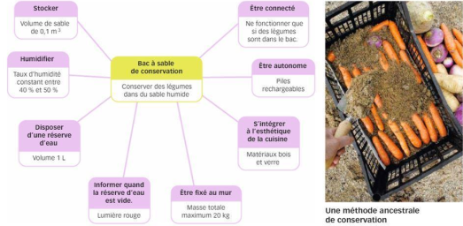
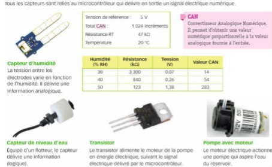
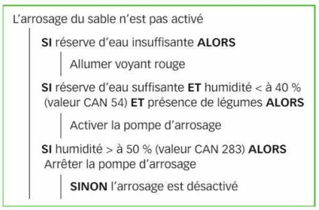
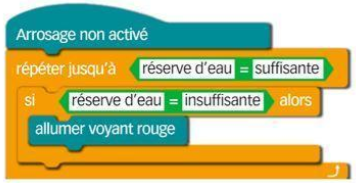
Aide-toi du Doc 1 (app smartphone) et de la mission.
Aide-toi du Doc 3 (capteurs).
Aide-toi du tableau de conversion humidité ↔ valeur CAN dans le Doc 3.
Aide-toi du Doc 4 (algorithme). 3 conditions doivent être toutes vraies en même temps.
P12 — Corrigé Exercice n°2
D'après l'algorithme du Doc 4, l'arrosage n'est activé que si les trois conditions sont vraies simultanément :
P12 — Technologie & Alimentation — Activité 2
Pour conserver leurs aliments, nos arrière-grands-parents utilisaient une glacière en bois garnie d’un bloc de glace livré chaque semaine ! Aujourd’hui, ton réfrigérateur connecté commande lui-même la liste de courses. Comment a-t-on pu passer de l’un à l’autre ?
Observe les 4 objets servant tous à conserver les aliments, mais à des époques différentes.


Compare les 4 objets et commente les évolutions des procédés de conservation. Pour chaque objet, identifie au moins un élément qui a changé par rapport au précédent.
| N° | Objet | Ce qui a évolué par rapport au précédent |
|---|---|---|
| 1 | Glacière | |
| 2 | Réfrigérateur | |
| 3 | Réfrig. connecté | |
| 4 | Boîte sous vide |
Les objets évoluent dans plusieurs domaines à la fois. Cite 4 grands domaines où les objets ont changé :
Une même fonction d’usage (préparer des aliments) peut être assurée par 3 objets très différents. Complète le tableau.


| Critères | Moulin manuel | Mixeur électrique | Robot cuiseur |
|---|---|---|---|
| Source d’énergie | |||
| Présence de capteurs | |||
| Niveau d’autonomie | |||
| Interface utilisateur | |||
| Type de système |
Identifie les 12 fonctions techniques du robot cuiseur intelligent (de FT1 à FT12). Utilise la ressource « Fonctions robots » et le site officiel Thermomix.

| Fonction | Intitulé de la fonction | Fonction | Intitulé de la fonction |
|---|---|---|---|
| FT1 | FT7 | ||
| FT2 | FT8 | ||
| FT3 | FT9 | ||
| FT4 | FT10 | ||
| FT5 | FT11 | ||
| FT6 | FT12 |
Consulte la partie « Introduction » de l’animation (Sortie d’un robot d’un labyrinthe) puis complète.

Préparation Thermomix : Si le beurre ET la cassonade sont dans le bol, ALORS fouetter vitesse 2 pendant 1 min 30. Si l’œuf ET le sucre vanillé sont ajoutés, ALORS mélanger vitesse 2 pendant 30 secondes. Si la farine ET la levure sont ajoutées, ALORS mélanger vitesse 3 pendant 2 min. Si les pépites de chocolat sont ajoutées, ALORS mixer vitesse 4 pendant 10 sec.
a) Surligne mentalement les éléments utiles à la programmation du robot (vitesses et temps).
b) Écris l’algorithme du robot (4 instructions SI…ALORS + durée) :
Réponds aux questions pour vérifier ta compréhension de l’activité. Un simulateur d’algorigramme est accessible après un score parfait.
P12 — Technologie & Alimentation — Activité 3
P12 — Corrigé Activité 1
① Partie 1 — Les objets technologiques et notre alimentation
Phase 1b — Exemples d’objets (réponses possibles) :
Phase 1c — Réponses attendues :
② Partie 2 — Fonctionnement du réfrigérateur
| N° | Fonction Technique (FT) | Solution Technique (ST) |
|---|---|---|
| FT1 | Condenser (liquéfier) le fluide frigorigène | 1 — Condenseur |
| FT2 | Comprimer le fluide frigorigène gazeux | 2 — Compresseur |
| FT3 | Vaporiser le fluide et absorber la chaleur intérieure | 3 — Évaporateur |
| FT4 | Déclencher le compresseur selon la température | 4 — Thermostat |
| FT5 | Détendre le fluide et réguler le débit (soupape) | 5 — Capillaire |
| FT6 | Transporter et céder/absorber la chaleur dans le circuit | 6 — Fluide frigorigène |
③ Partie 3 — Réfrigérateur connecté
| N° | Fonction Technique (FT) | Solution Technique (ST) |
|---|---|---|
| FT7 | Afficher l’inventaire et les dates de péremption des aliments | Caméra intérieure + écran tactile |
| FT8 | Permettre le contrôle et la commande à distance | Module Wi-Fi / Application smartphone |
🎯 Bilan
• Les besoins humains changent (modes de vie, confort, santé).
• Les avancées scientifiques ouvrent de nouvelles possibilités.
• Les contraintes économiques poussent à innover.
• Les exigences sociales et environnementales imposent de nouvelles solutions (réduction du gaspillage, développement durable).
P12 — Corrigé Activité 2
| N° | Objet | Évolutions |
|---|---|---|
| 1 | Glacière (XIXè s.) | Objet en bois isolé avec de la sciure. Conservation par froid naturel (bloc de glace). Aucune énergie électrique, aucun capteur. |
| 2 | Réfrigérateur (XXè s.) | Coque en tôle d’acier, compresseur électrique. Apparition d’un thermostat (capteur de température). Autonomie permanente. |
| 3 | Réfrig. connecté (XXIè s.) | Écran tactile, caméras, capteurs multiples (température, hygrométrie), Wi-Fi, application smartphone. Peut commander la liste de courses. |
| 4 | Boîte sous vide (XXIè s.) | Plastique transparent avec pompe à vide. Conservation par retrait de l’oxygène. Ralentit le développement des bactéries. |
| Critères | Moulin manuel | Mixeur électrique | Robot cuiseur |
|---|---|---|---|
| Source d’énergie | Musculaire | Électrique | Électrique |
| Présence de capteurs | Non | Non | Oui |
| Niveau d’autonomie | Faible | Moyenne | Élevée |
| Interface utilisateur | Aucune | Simple bouton | Écran tactile |
| Type de système | Non mécanisé | Mécanisé | Automatisé |
Système non mécanisé : Système à énergie musculaire fournie par l’homme.
Système mécanisé : Système qui utilise une énergie non fournie par l’homme (électrique, thermique, etc.).
Système automatisé : Système dont les opérations sont réalisées par un chaînement programmé (succession automatique d’étapes).
| FT | Intitulé | FT | Intitulé |
|---|---|---|---|
| FT1 | Peser les ingrédients (balance intégrée) | FT7 | Émulsionner (sauces, mayonnaise) |
| FT2 | Mélanger / fouetter | FT8 | Maintenir au chaud |
| FT3 | Mixer / hacher | FT9 | Suivre une recette guidée pas à pas |
| FT4 | Pétrir une pâte | FT10 | Programmer une durée et une vitesse |
| FT5 | Cuire à température contrôlée | FT11 | Se connecter à Internet (Wi-Fi) |
| FT6 | Cuire à la vapeur (étage Varoma) | FT12 | Sécuriser l’utilisation (verr. couvercle) |
Définitions :
Algorithme : Suite d’instructions sous forme de texte permettant de résoudre un problème donné.
Algorigramme : Représentation graphique normalisée d’un algorithme (symboles standards reliés par des flèches).
Début
SI beurre ET cassonade ALORS fouetter vitesse 2 — attendre 1 min 30
SI œuf ET sucre vanillé ALORS mélanger vitesse 2 — attendre 30 secondes
SI farine ET levure ALORS mélanger vitesse 3 — attendre 2 min
SI chocolat ALORS mixer vitesse 4 — attendre 10 secondes
Fin

Pourquoi les objets évoluent-ils ?
Les objets évoluent grâce aux découvertes scientifiques (nouveaux matériaux, électronique…) et aux besoins nouveaux des utilisateurs (gain de temps, sécurité, confort). Chaque innovation s’appuie sur les précédentes.
Quel est l’avantage d’un algorigramme avant de programmer ?
Il permet de visualiser clairement la suite des instructions et les tests, de repérer les erreurs avant d’écrire le code, et de partager facilement la logique (norme universelle).
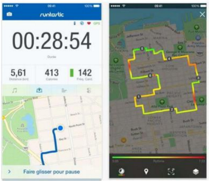
En t’aidant du texte de présentation, complète la bête à cornes :
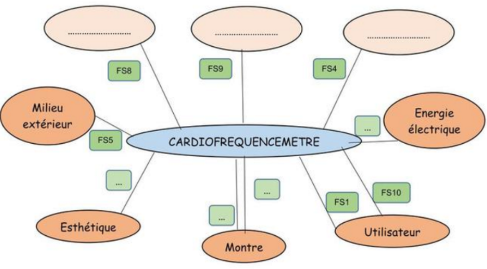
| Liaison numérotée | Élément du milieu extérieur (réponse à trouver) |
|---|---|
| FS9 | |
| FS4 | |
| FS8 |
| Réf. | Fonction de service | Critères | Niveaux |
|---|---|---|---|
| FS1 | Nombre de battements à la minute | Entre 15 et 240 ± 3 % | |
| FS2 | Afficher la fréquence cardiaque de l’utilisateur | En temps réel | Moins d’1 seconde de délai |
| FS3 | Être connecté à la montre sans fil | Utiliser une fréquence | Hors fréquence réglementée par l’État |
| FS4 | Respecter les normes françaises et européennes | Sécurité des utilisateurs | Dommage corporel |
| FS5 | Résister au milieu extérieur | infiltrations d’eau, températures | Rigide, 100 % étanche, −10 °C à +50 °C |
| FS6 | Posséder des critères d’esthétisme actuel | Multi-matériau, couleur | 2 à 3 matières/couleurs |
| FS7 | Être alimenté en énergie autonome | Pile lithium 3V | Pile CR2032 |
| FS8 | Respecter l’environnement | Être recyclable | À 95 % minimum |
| FS9 | Communiquer sans fil | Connexion Bluetooth | Norme Bluetooth |
| FS10 | S’adapter à la morphologie de l’utilisateur | Taille de la cage thoracique | Système élastique avec réglage rigide de 75 à 150 cm |
| Milieu extérieur / Fonction | Numéro de FS |
|---|---|
| Esthétique | |
| Montre | |
| Utilisateur |
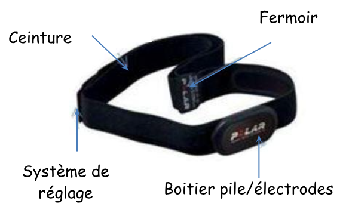
Composants du cardiofréquencemètreLe cardiofréquencemètre est composé de 4 parties. Indique en quelle matière chaque partie doit être conçue :
📖 Guide de matériaux (cliquer pour afficher)
| Matériau | Constitution | Recyclabilité | Caractéristiques |
|---|---|---|---|
| Acier | Acier | 100 % | Résistant, usinable, fusible, oxydable, conducteur électrique |
| Polyuréthane rigide | Mousse rigide | 98 % | Rigide, fusible, moulable, non conductible, bonne résistance à l’eau |
| Polyuréthane souple | Mousse souple | 75 % | Souple, fusible, moulable, non conductible, bonne résistance à l’eau |
| Tissu élastique | 46% Nylon, 32% polyester, 22% caoutchouc | 96 % | Idéal pour les éléments exigeant une bonne élasticité |
| Partie | Matière choisie |
|---|---|
| Boîtier pile / Électrodes | |
| Ceinture | |
| Fermoir | |
| Système de réglage |
Programme : L’utilisateur saisit sur un clavier de commande la fréquence du cycle de pompage. Les informations sont traitées par le microcontrôleur qui affiche l’état du système. Un capteur détecte la hauteur de l’eau dans le bac à plante et stoppe la pompe pour éviter tout débordement.
Chaîne d’énergie : Le dispositif est alimenté par un transformateur 230V~/15V=. Le moteur de la pompe est alimenté via un relais commandé par le microcontrôleur. Ce moteur convertit l’énergie électrique en énergie mécanique qui déplace l’eau grâce aux pales de la turbine.
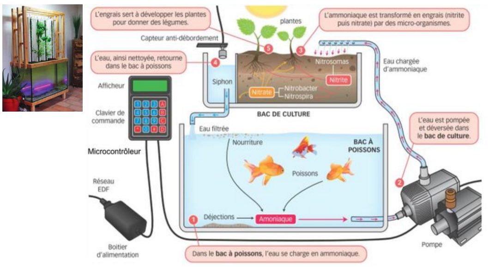
🔧 Détail de fonctionnement des composants
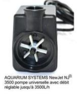
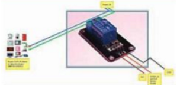
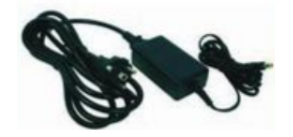
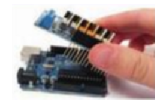
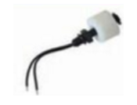
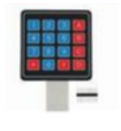
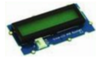
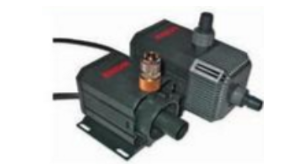
Retrouve les 4 solutions techniques correspondant aux fonctions techniques du schéma fonctionnel :
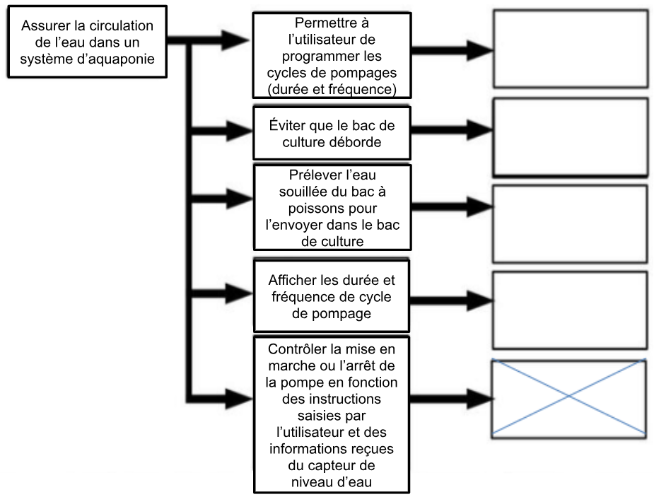
| Fonction d’usage | Fonction technique | Solution technique (à trouver) |
|---|---|---|
| Assurer la circulation de l’eau dans un système d’aquaponie | Permettre à l’utilisateur de programmer les cycles de pompage | |
| Éviter que le bac de culture déborde | ||
| Prélever l’eau souilllée du bac à poissons pour l’envoyer dans le bac de culture | ||
| Afficher les durée et fréquence de cycle de pompage | ||
| Contrôler la mise en marche ou l’arrêt de la pompe en fonction des instructions et du capteur | ✅ Microcontrôleur (pré-rempli) |
Place les solutions techniques utilisées dans le diagramme fonctionnel du système de pompage :
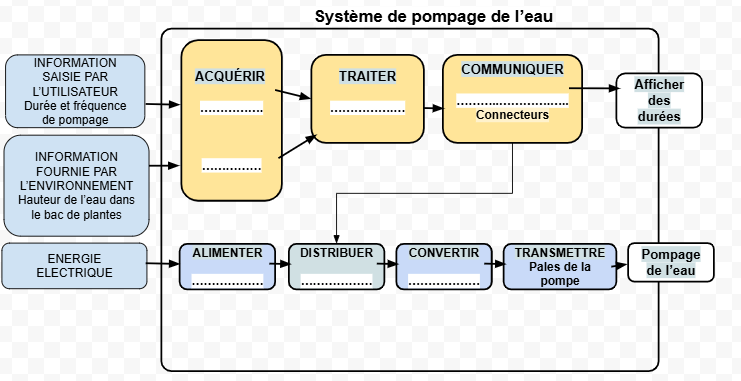
Observe l’organigramme ci-dessous et place le numéro de l’action ou de l’événement correspondant à chaque étape :
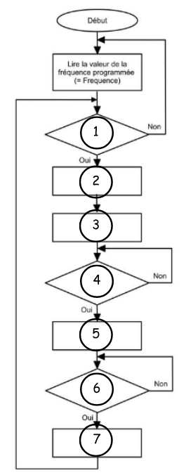
| Position | Numéro de l’action / événement |
|---|---|
| ① | |
| ② | |
| ③ | |
| ④ | |
| ⑤ | |
| ⑥ |
| Case | Réponse attendue | Pts |
|---|---|---|
| À qui rend-il service ? | Le sportif / l’utilisateur sportif | 1 |
| Sur quoi agit-il ? | La fréquence cardiaque / Le cœur | 1 |
| Dans quel but ? | Indiquer le rythme cardiaque en temps réel pour ne pas dépasser la FCM | 1 |
| FS | Fonction | Spécifications attendues |
|---|---|---|
| FS1 | Mesurer la fréquence cardiaque | Plage 15–240 bpm, précision ±3 % |
| FS2 | Afficher la fréquence en temps réel | Délai < 1 s |
| FS3 | Connexion sans fil ceinture ↔ montre | Fréquence radio non réglementée |
| FS4 | Respecter normes & réglementations | Normes françaises et européennes (CE) |
| FS5 | Résister au milieu extérieur | Plage -10°C à +50°C, étanchéité aux infiltrations d'eau |
| FS6 | Esthétique | 2 à 3 matières / couleurs |
| FS7 | S'alimenter en énergie de façon autonome | Pile CR2032 |
| FS8 | Respecter l'environnement | Recyclabilité ≥ 95 % |
| FS9 | Communiquer avec un smartphone | Connexion Bluetooth |
| FS10 | S'adapter à la morphologie | Réglage 75–150 cm |
| Liaison FS | Élément attendu |
|---|---|
| FS9 | Smartphone — connexion Bluetooth |
| FS4 | Normes / Réglementations — normes françaises et européennes |
| FS8 | Environnement — recyclage |
| FS | Fonction attendue |
|---|---|
| FS1 | Mesurer la fréquence cardiaque de l’utilisateur |
| FS5 | Résister au milieu extérieur |
| FS8 | Respecter l’environnement |
| Milieu extérieur / Fonction | Numéro de FS |
|---|---|
| Esthétique | FS6 — Posséder des critères d’esthétisme actuel |
| Montre | FS2 — Afficher la fréquence cardiaque |
| Utilisateur | FS1 — Mesurer la fréquence cardiaque |
| Partie | Matière(s) acceptée(s) | Justification |
|---|---|---|
| Boîtier pile / Électrodes | Polyuréthane rigide ou Acier | Polyuréthane : protection étanche FS5. Acier : conducteur pour les électrodes, recyclable à 100 % (FS8) |
| Ceinture | Tissu élastique | Élastique, s’adapte à la morphologie 75–150 cm (FS10), confortable |
| Fermoir | Polyuréthane rigide ou Acier | Matière rigide et résistante pour assurer la fermeture sécurisée |
| Système de réglage | Polyuréthane rigide ou Acier | Pièce rigide qui permet le coulissement / verrouillage du réglage de taille (FS10) |
| Fonction technique | Solution technique |
|---|---|
| Permettre à l’utilisateur de programmer les cycles | Clavier de commande |
| Éviter que le bac déborde | Capteur de niveau d’eau |
| Prélever l’eau du bac à poissons | Pompe de relevage |
| Afficher les durée et fréquence | Afficheur |
| Fonction | Solution |
|---|---|
| ACQÚÉRIR — info utilisateur | Clavier de commande |
| ACQÚÉRIR — info environnement | Capteur de niveau d’eau |
| TRAITER | Microcontrôleur |
| COMMUNIQUER | Afficheur |
| ALIMENTER | Boîtier d’alimentation |
| DISTRIBUER | Relais |
| CONVERTIR | Moteur de la pompe |
| Position | Action / Événement | N° |
|---|---|---|
| ① | Mettre le chronomètre à 0 | 2 |
| ② | Temps écoulé = Fréquence ? | 7 |
| ③ | Démarrer le chronomètre | 1 |
| ④ | Bouton Marche enclenché ? | 5 |
| ⑤ | Activer la pompe (Fermer le relais) | 3 |
| ⑥ | Niveau d’eau atteint ? | 6 |
Tableau de bord professeur
🔑 Accès prof| Élève | Classe | Activité | Date | Statut | Actions |
|---|
🔓 Codes d'invitation par séquence
Toutes les capsules sont verrouillées par défaut. Les élèves doivent saisir le code ci-dessous pour y accéder.
Laisse le champ vide pour restaurer le code par défaut de la séquence (le verrouillage reste actif).
Une capsule armée verrouille chaque copie dès son arrivée :
l'élève ne peut plus la rouvrir, la modifier ni l'exporter. Sa note et l'appréciation lui restent
visibles, et le verrou se retire à tout moment.
Armer n'agit que sur les copies à venir. Pour celles qui sont déjà rendues, utilisez
« Verrouiller les copies déjà rendues » ci-dessous, ou les boutons de l'onglet Suivi
pour une portée filtrée (classe, statut).
Message envoyé à chaque élève dont la copie redevient consultable : « Bonjour. Tu peux maintenant consulter ton travail de technologie sur le site techno. M.Blanchard » (lien vers le site). Toujours un aperçu et une confirmation avant l'envoi ; un élève n'est jamais prévenu deux fois pour une même capsule.
📧 Notifications mail
Recevez un mail à chaque nouvelle soumission d'élève. Le système utilise Apps Script (Google) pour l'envoi.
apps-script-backend.gs est déployée (avec le scope MailApp.sendEmail). Première exécution : Google demande une autorisation pour envoyer des mails depuis votre compte.
🧑🏫 Comptes enseignants
Les collègues à qui tu as ouvert un accès. Ils voient les capsules sans code et suivent les copies de leurs classes ; ils n'ont accès ni à cet onglet, ni aux codes d'accès.
🔑 Identifiants & mots de passe élèves
Chaque élève a un mot de passe individuel. Imprimez ce tableau et distribuez les feuillets découpés.
🔐 Identifiant professeur
Modifier dans la variable CFG avant de déployer.
🗑️ Données
P11 — L'eau, ressource essentielle (4e)
Activité individuelle regroupant les activités 1 et 2 de la séquence (le simulateur de consommation se fait en binôme). Le bouton 🎤 Dicter permet de répondre à la voix, 👁️ Confort de lecture règle la police, la taille et la couleur de la page, et 🔊 Lecture immersive lit la fiche à voix haute. Clique « Envoyer au professeur » quand tu as terminé : ton brouillon est de toute façon enregistré automatiquement sur ce poste.
P11 — Corrigé L'eau, ressource essentielle
📚 Corrigé, aménagements et notes d'organisation — 4e
Compétence CT 2.5 — identifier un besoin et énoncer un problème technique. Les réponses ouvertes (bilan, gaspillages observés, justifications) admettent d'autres formulations : les exemples ci-dessous servent de repère de correction.
La fiche regroupe les deux activités de la séquence : Activité 1 — Le voyage de l'eau (parties 1 à 4) et Activité 2 — Combien coûte l'eau, où la gaspille-t-on ? (parties 5 à 8). L'élève envoie un seul travail. Pour ne traiter que l'activité 1 en première séance, replier les parties 5 à 8 avec le bouton « Tout ouvrir / fermer ».
Organisation
| Modalité | Individuelle (identité pré-remplie depuis le compte élève). Le simulateur de la partie 5 se fait en binôme. |
| Support | Navigateur — Chrome ou Edge pour la dictée vocale. |
| Durée indicative | 2 séances : parties 1 à 4, puis parties 5 à 8. |
| Sauvegarde | Brouillon automatique sur le poste ; « Envoyer au professeur » dépose le travail dans le tableau de bord. |
| Aménagements | « 🎤 Dicter » sur chaque champ rédigé, « 👁️ Confort de lecture » (police, taille, interligne, espacement, couleur de page, règle et masque de lecture), « 🔊 Lecture immersive ». |
| Auto-correction | 8 exercices se corrigent seuls dans la fiche, avec un retour explicatif. |
| Code élève | À communiquer : voir le panneau professeur « Codes d'accès », où il se modifie. |
Ressources ouvertes depuis la fiche
| Partie 1 | Le parcours de l'eau · Réduire sa consommation d'eau (Ouest-France, 20 juillet 2025) |
| Partie 2 | Carte des origines de l'eau en Vendée · vendee-eau.fr |
| Partie 5 | Simulateur de consommation d'eau (Eau de Paris), en binôme |
| Partie 6 | Facture recto · Facture détaillée (verso) — SUEZ pour le compte de Vendée Eau |
À vérifier avant la séance : le partage des PDF du Drive doit être réglé sur « Tous les utilisateurs disposant du lien », sinon les élèves tombent sur une demande d'autorisation.
Activité 1 — 1. Une ressource précieuse
Échauffement vrai / faux.
| Affirmation | Réponse | Pourquoi |
|---|---|---|
| Moins de 1 % de l'eau de la planète est de l'eau douce facilement accessible. | Vrai | La Terre est couverte à 70 % d'eau, mais presque tout est salé. |
| L'eau qui sort d'une station d'épuration est potable. | Faux | Elle est dépolluée pour être rendue au milieu naturel, mais pas buvable. |
| Une douche consomme moins d'eau qu'un bain. | Vrai | 60 à 80 L pour une douche, 150 L pour un bain. |
| Les urines contiennent un polluant appelé azote. | Vrai | L'azote est nocif pour le milieu naturel en grande quantité. |
| Le dégrillage sert à enlever les graisses. | Faux | Le dégrillage retient les gros déchets ; les graisses partent au dégraissage. |
1.1 — Pourquoi économiser l'eau potable ? L'eau douce potable est rare (moins de 1 % de l'eau de la planète), coûteuse à produire et à acheminer (usine, pompes, canalisations, énergie), et une partie est déjà perdue dans les fuites du réseau (environ un litre sur cinq en France). La gaspiller, c'est gaspiller une ressource limitée et de l'énergie.
2. D'où provient l'eau ?
2.1. L'eau est captée à partir :
- d'une source qui sort naturellement de terre ;
- d'un cours d'eau (rivière, fleuve, retenue de barrage) ;
- d'une nappe d'eau souterraine, atteinte par forage.
La vérification accepte les synonymes (rivière, fleuve, ruisseau, retenue, barrage, lac ; nappe, souterrain, forage, puits) et ignore accents et majuscules.
2.2 — Un captage ou une usine en Vendée. La Bultière, le Rochereau, le Graon, le Jaunay, Apremont, Mervent, le Moulin Papon, Finfarine, l'Angle Guignard, le Marillet, le Gros Noyer, Sainte-Germaine, Saint-Martin-des-Fontaines… Selon la commune, faire retrouver leur propre origine sur la carte.
3. Comment l'eau devient-elle potable ?
3.1 — Définition. Une eau potable est une eau que l'on peut boire sans risque pour la santé.
3.2 — Ordre du traitement et solution technique :
| Ordre | Étape | Solution technique |
|---|---|---|
| 1 | Coagulation-floculation | Injection de réactifs |
| 2 | Décantation | Repos de l'eau |
| 3 | Filtration | L'eau traverse du sable |
| 4 | Désinfection | Ajout de chlore |
Détail utile à l'oral : les réactifs sont le charbon actif (micropolluants, pesticides, matières organiques) puis le chlorure ferrique et des polymères (pour agglomérer les particules en suspension).
4. Comment l'eau arrive-t-elle au robinet ?
4.1. 1 : le réservoir (souvent semi-enterré) — 2 : la pompe de relevage — 3 : le château d'eau.
4.2 — Fonction d'usage du château d'eau. Stocker l'eau en hauteur pour donner de la pression et alimenter les robinets en continu. On attend un verbe à l'infinitif : situé plus haut que les habitations, le château d'eau laisse l'eau redescendre par son propre poids.
4.3 — Le cycle domestique de l'eau. Captage → Usine de potabilisation → Château d'eau → Robinet → Égouts et collecteurs → Station d'épuration. Insister sur les deux circuits : celui qui apporte l'eau propre, et celui qui emporte l'eau sale pour la dépolluer avant de la rendre au milieu naturel.
Activité 2 — 5. Estimer sa consommation
5.1. Valeur libre, à comparer à l'ordre de grandeur : 45 à 55 m³ par personne et par an (environ 148 L par jour). Les résultats du simulateur varient selon le foyer : c'est l'occasion de faire dire pourquoi.
5.2 — Répartition moyenne en France :
| Hygiène corporelle | Chasse d'eau | Linge | Vaisselle | Autres |
|---|---|---|---|---|
| ≈ 39 % | ≈ 20 % | ≈ 12 % | ≈ 10 % | ≈ 19 % |
La vérification demande un total de 100 % (± 2) et des valeurs à ± 8 points des moyennes. « Autres » regroupe jardin et voiture (6 %), cuisine (6 %), fuites (6 %) et la boisson (1 %) : on ne boit qu'environ 1 % de l'eau potable qu'on paie — un chiffre qui marque les élèves.
6. Lire une facture d'eau
6.1. Prix unitaire HT : 1,162 € / m³ (ligne « Consommation Vendée Eau — tarif Bleu 1er semestre 2025 »). Piège : la ligne au-dessus affiche 1,17 €, c'est le tarif du semestre précédent.
6.2 — Les données de la feuille. La feuille estime la facture annuelle de l'élève : B2 vient de son simulateur (question 5.1), B3 et B5 se relèvent sur la facture de M. Dupont. Le résultat est donc différent d'un élève à l'autre. Trois cellules sont fournies et verrouillées (fond gris, cadenas) : elles se remplissent seules et ne peuvent pas être modifiées.
| Cellule | Libellé | Attendu |
|---|---|---|
| B2 | Consommation sur l'année (m³) | la valeur du simulateur (45 à 55 m³ / personne / an) |
| B3 | Consommation Vendée Eau — prix unitaire HT | 1,162 €/m³ |
| B4 | Redevances Agence de l'eau | 🔒 fournie : 0,408 €/m³ |
| B5 | Abonnement pour l'année | 86 € (43 € sur la facture × 2 semestres) |
| B6 | Montant de la TVA (€) | 🔒 fournie : 5,5 % du sous-total HT |
| B8 | Total des redevances (€) | 🔒 fournie : consommation × 0,408 |
Le bouton « Vérifier mes données » ne donne jamais la valeur : il renvoie l'élève à l'endroit du document et signale les deux confusions fréquentes — le tarif 1,17 € du semestre précédent, et l'abonnement semestriel pris pour un abonnement annuel.
6.3 — Formules attendues :
| Cellule | Libellé | Formule |
|---|---|---|
| B7 | Total eau (€) | =B2*B3 |
| B9 | Sous-total HT (€) | =B7+B8+B5 |
| B10 | TOTAL TTC (€) | =B9+B6 |
La vérification exige une vraie formule (elle doit commencer par =) : un résultat tapé à la main est refusé, puisque c'est l'écriture de la formule qui est évaluée. Toute écriture équivalente donnant le même résultat est acceptée (par exemple =B2*B3+B8+B5 en B9). Avec 50 m³, le total s'établit à 173,55 € pour l'année (B8 = 20,40 € et B6 = 9,05 €).
L'aide, en classe. Aucune formule n'est affichée nulle part sur la fiche. Le bouton « Coup de pouce » ouvre deux crans, et deux seulement : le cran 1 reformule la ligne avec des mots (sans citer de cellule), le cran 2 dit quelles cellules interviennent (sans dire l'opération). Le nombre de crans ouverts par cellule remonte dans le tableau de bord : il indique où la classe a buté. Le message d'erreur, lui, nomme la faute sans donner la formule — signe = oublié, résultat tapé à la main, aucune référence utilisée, cellule inexistante, bonnes cellules mais mauvaise opération, ou formule juste s'appuyant sur une cellule encore fausse.
Le bouton « 🧾 Tester mes formules sur la vraie facture » charge le temps d'un test les chiffres du semestre de M. Dupont — 59 m³, eau à 1,162 €/m³, abonnement 43 € (les redevances de l'Agence de l'eau, 0,408 €/m³, sont la valeur figée de B4 : 0,058 prélèvement + 0,33 consommation + 0,02 performance des réseaux) — et des formules justes affichent alors 143,09 €, à comparer aux 143,26 € imprimés sur la facture. C'est l'autocontrôle de l'élève : si son total colle au document, ses formules sont bonnes. Le bouton « Revenir à mes valeurs » lui rend ensuite sa propre estimation. L'écart de 17 centimes vient des deux tarifs successifs appliqués sur la facture (20 m³ à 1,17 € puis 39 m³ à 1,162 €) : très bon point d'appui pour faire lire la facture en détail.
6.4 — Montant TTC. Réponse personnelle : c'est le montant affiché en B10, qui dépend de la consommation estimée par l'élève. Contrôle rapide : (B2 × 1,162 + B2 × 0,408 + 86) × 1,055 — soit 173,55 € pour 50 m³, 190,90 € pour 60 m³.
6.5 — Les cellules orange. Elles correspondent à la redevance d'assainissement : la collecte et le traitement des eaux usées par les égouts et la station d'épuration. C'est un service distinct du prix de l'eau potable, facturé sur la même facture. Repère (Ouest-France) : environ 45 % de la facture pour la distribution de l'eau, 37 % pour la collecte et la dépollution des eaux usées, 18 % pour les taxes et redevances.
7. Où gaspille-t-on l'eau ?
7.1 — Associations :
| Gaspillage | Geste économe |
|---|---|
| Laisser couler l'eau pendant le brossage des dents | Fermer le robinet ; poser un mousseur (limiteur de débit) |
| Prendre un bain plutôt qu'une douche | Préférer une douche courte |
| Lancer le lave-linge à moitié vide | Attendre que la machine soit bien remplie |
| Un robinet qui goutte en permanence | Signaler et réparer la fuite |
| Arroser le jardin en plein soleil, à midi | Arroser le soir ou tôt le matin |
7.2. Réponses libres. Exemples : la chasse d'eau à simple flux (→ double flux), laver la voiture au jet (→ station de lavage ou seau), la fuite de la chasse d'eau du collège (→ prévenir l'agent d'entretien), l'eau froide perdue en attendant l'eau chaude (→ la récupérer dans un seau pour arroser).
7.3 — La calculette. Base : 10 litres par minute pour un robinet ouvert et 4,34 € le m³ (prix moyen TTC en France). Pour 3 minutes par jour : 30 L/jour, soit 10 950 L ≈ 11 m³ et environ 47,50 € par an, pour une seule personne. Faire multiplier par le nombre d'élèves du collège pour l'effet de bascule.
8. Vers une solution technique
8.1 — QCM. La bonne réponse est le robinet automatique à détection de présence : il ne laisse couler l'eau que lorsque des mains sont détectées, donc il agit tout seul, sans dépendre de la bonne volonté de chacun. L'affiche relève de la sensibilisation, pas de la solution technique ; le seau ne réduit pas la consommation ; un réservoir plus grand ne change rien au gaspillage.
8.2. On attend l'idée d'un robinet qui se ferme seul (détection infrarouge, poussoir temporisé) et/ou d'un mousseur / limiteur de débit, avec une justification : l'eau ne coule que lorsqu'on en a besoin, donc on ne peut plus l'oublier ouvert.
8.3 — Bilan. Éléments valorisés : la rareté de l'eau douce, le coût réel d'un m³, la part de l'hygiène et de la chasse d'eau, la différence entre un geste (qui dépend de nous) et un objet technique (qui agit tout seul).
Aménagements pour les élèves à besoins particuliers
Tout est accessible depuis la barre d'outils de la fiche, sans installation ni compte. Les réglages sont enregistrés sur l'appareil et communs à toutes les capsules : l'élève ne les refait qu'une fois.
| Réglage | Ce qu'il change | Pour qui |
|---|---|---|
| Police | Standard, B612 (conçue pour être lue vite sans confondre les lettres proches) ou Verdana | Dyslexie, confusion de lettres |
| Taille du texte | 5 crans, de 100 % à 150 % | Basse vision, fatigue visuelle |
| Interligne | Normal, aéré, très aéré | Dyslexie, saut de ligne |
| Espacement | Lettres et mots, 3 crans | Dyslexie (réduit l'effet de masquage latéral) |
| Couleur de page | Blanc, crème, bleu pâle, gris, vert pâle — appliquée au fond et aux cartes | Éblouissement, sensibilité au contraste |
| Lignes courtes | Limite les paragraphes à ~62 caractères | Dyslexie, retour à la ligne |
| Règle de lecture | Bande surlignée qui suit le curseur ou le doigt | Saut de ligne, poursuite oculaire |
| Masque de lecture | Assombrit le reste de la page autour de la ligne lue | Trouble attentionnel (TDAH) |
| Lecture immersive | Lit la fiche à voix haute en surlignant le paragraphe et le mot prononcé ; vitesse réglable, clic pour reprendre à un endroit | Dyslexie, lecture lente, non-lecteurs |
| Dictée vocale | Bouton « 🎤 Dicter » sur chaque champ rédigé (Chrome/Edge ; micro du clavier sur iPad) | Dysorthographie, dysgraphie |
La conception des exercices vise aussi l'accessibilité : les deux remises en ordre se font avec des flèches ▲▼ et jamais par glisser-déposer (utilisable à la souris, au doigt et au clavier, sans pénaliser les élèves dyspraxiques) ; les corrections donnent un retour explicatif et pas seulement « faux » ; la correction des champs textuels ignore accents, majuscules et ponctuation ; et la fiche est entièrement imprimable pour les élèves dont le PAP prévoit un support papier.
Notes techniques
- Fichier autonome : il fonctionne aussi ouvert directement (
Niveau 4/P11 Eau ressource essentielle/eau_eleve.html), hors du site. - Identité : le site dépose
eau4e_prefilldans lelocalStorageavant d'afficher l'activité ; l'élève peut corriger les champs. - Envoi : même backend Apps Script que les autres capsules (
cap: "eau4e"). En cas de coupure réseau, la soumission est mise en file d'attente sur le poste et repart automatiquement. - Le mini-tableur est identique à l'outil autonome utilisé en classe (
techno-p11-eau/tableur-facture.html) : mêmes libellés repris de la facture, mêmes données à relever, même aide graduée, mêmes messages d'erreur. Intégré à la fiche, il remonte en plus dans le tableau de bord avec le reste du travail. - Modules partagés réutilisables :
assets/js/confort-lecture.jsetassets/js/lecture-immersive.js.
P11 — Activités 3 et 4 : le besoin et les normes (4e)
Activité individuelle regroupant les activités 3 et 4 de la séquence, autour du robinet automatique à détection : fonction d'usage, méthode QQOQCP, bête à cornes, puis contraintes, norme et indice de protection IP. Le bouton 🎤 Dicter permet de répondre à la voix, 👁️ Confort de lecture règle la police, la taille et la couleur de la page, et 🔊 Lecture immersive lit la fiche à voix haute.
P11 — Synthèse intermédiaire : concevoir un objet technique (4e)
La synthèse des quatre outils de conception — bête à cornes, pieuvre, cahier des charges, normes — à conquérir notion par notion : un petit défi, puis la définition se dévoile. Rien n'est noté et rien n'est à envoyer. Le bouton « Imprimer ma synthèse » sort la fiche complète et correcte, avec ses schémas, identique pour tous les élèves.
P11 — Activités 5 et 6 : pieuvre, cahier des charges et FAST (4e)
Activité individuelle regroupant les activités 5 et 6 de la séquence, autour du robinet automatique à détection : pieuvre et type des fonctions, cahier des charges fonctionnel complété à partir d'une fiche technique, diagramme FAST, puis chaînes d'information et d'énergie. Chaque question se vérifie en deux essais : une aide d'abord, le corrigé ensuite. 👁️ Confort de lecture règle la police, la taille et la couleur de la page, et 🔊 Lecture immersive lit la fiche à voix haute.
P11 — Corrigé Activités 5 et 6
📚 Corrigé — Activités 5 et 6
Compétences CT 2.1 — s'approprier un cahier des charges, et CT 4.1 — associer des solutions techniques à des fonctions. Objet étudié : le robinet automatique à détection. Repères de correction conformes aux corrigés distribués (S5 et S6).
A6 : quelles solutions techniques réalisent les fonctions du robinet automatique ?
Organisation
| Modalité | Individuelle (identité pré-remplie depuis le compte élève). |
| Support | Navigateur, ordinateur ou tablette. Rien à installer. |
| Durée indicative | Une séance : environ 42 min de travail, 49 min avec les aménagements. Si le temps manque, laisser de côté le tri « critère ou niveau ? », puis le mini-quiz de lecture du FAST. |
| Vérification | Chaque question se vérifie en deux essais : au 1er, une aide sur chaque ligne fausse ; au 2e, le corrigé. Le score se fige au 2e essai (ou dès un 1er essai sans faute) et n'est visible que dans le modal professeur. |
| Sauvegarde | Brouillon automatique ; « Envoyer au professeur » dépose le travail dans le tableau de bord. |
| Code élève | Voir le panneau professeur (onglet « Codes d'accès »). |
Activité 5 — 1. La pieuvre
| Type | Fonction |
|---|---|
| FP | Permettre à l'utilisateur de se laver les mains avec de l'eau |
| FC | Détecter la présence des mains |
| FC | Résister à l'environnement humide |
| FC | Être alimenté en énergie |
| FC | Se fixer sur le lavabo |
| FC | Respecter le budget |
FP = relie deux EME (l'utilisateur et l'eau). Les FC relient le robinet à un seul EME (énergie, humidité, lavabo, budget…).
Activité 5 — 2. Le cahier des charges fonctionnel (CDCF)
| Rep. | Fonction | Critère | Niveau |
|---|---|---|---|
| FP1 | Distribuer de l'eau pour se laver les mains | Débit | ≈ 2 L/min |
| FC1 | Détecter la présence des mains | Distance | 0 à ≈ 15 cm |
| FC2 | Résister à l'environnement humide | Indice IP | IP65 |
| FC3 | Limiter la consommation d'eau | Temps d'arrêt après le retrait des mains | Immédiat (0 s) |
Les niveaux se lisent dans le document fictif de la fiche : « Fiche technique — Robinet à détection, modèle D-15 ».
Ce que je dois retenir — activité 5
- Pieuvre : liens entre l'objet et son environnement. FP = fonction principale (relie 2 EME) ; FC = fonction contrainte (objet ↔ 1 EME).
- Cahier des charges fonctionnel : fonctions + critères + niveaux (valeurs à atteindre) ; document de référence que le concepteur doit respecter.
Activité 6 — 2. Le FAST du robinet automatique
| Fonction d'usage | Fonction technique | Solution technique |
|---|---|---|
| Distribuer de l'eau sans contact pour économiser l'eau | Détecter la présence des mains | Capteur infrarouge |
| Traiter l'information et commander | Carte électronique (microcontrôleur) | |
| Ouvrir / fermer l'arrivée d'eau | Électrovanne | |
| Produire l'énergie électrique (sans pile) | Turbine + générateur (entraînés par l'eau) |
Lecture : « Comment détecter la présence ? → grâce au capteur infrarouge. » / « Pourquoi une électrovanne ? → pour ouvrir et fermer l'arrivée d'eau. »
Activité 6 — Les chaînes d'information et d'énergie
| Chaîne | Fonction | Solution technique |
|---|---|---|
| Chaîne d'information | ACQUÉRIR | Capteur infrarouge |
| TRAITER | Carte électronique (microcontrôleur) | |
| COMMUNIQUER | pas de solution étudiée dans ce FAST | |
| Chaîne d'énergie | ALIMENTER | Tuyauterie (l'énergie arrive avec l'eau sous pression) |
| DISTRIBUER | Vanne (électrovanne) | |
| CONVERTIR | Turbine + générateur (entraînés par l'eau) | |
| TRANSMETTRE | pas de solution étudiée dans ce FAST |
Ce que je dois retenir — activité 6
- Diagramme FAST : relie la fonction d'usage → fonctions techniques → solutions techniques. Une fonction commence par un verbe à l'infinitif.
Aménagements pour les élèves à besoins particuliers
- « 👁️ Confort de lecture » (police, taille, interligne, couleur de page, règle de lecture) et « 🔊 Lecture immersive » : réglages communs à toutes les capsules.
- Consignes découpées en étapes courtes ; une aide sur chaque ligne fausse au 1er essai, sans pénalité.
- Aucun glisser-déposer : tout se fait par boutons et listes, à la souris, au doigt ou au clavier (Tab, Entrée).
- Réponses courtes : pas de dictée vocale dans cette fiche.
Notes techniques
- Fichier autonome
Niveau 4/P11 Eau ressource essentielle/eau56_eleve.html, servi en iframe ; identité déposée par le site danseau56_prefill. - Envoi : même backend que les autres capsules (
cap: "eau56"), avec file d'attente hors ligne. Essais, scores figés et verdicts voyagent dansfields._suivi: le backend n'enregistre quefields. - Le score figé est indicatif : il est conservé sur le poste de l'élève ; changer de poste ou effacer les données du navigateur le remet à zéro.
- Correction : faite par la fiche (bloc
LOGIQUE-EAU56), testée paroutils/test_eau56.html, à ouvrir depuis un serveur local.
P11 — Corrigé Activités 3 et 4
📚 Corrigé et notes d'organisation — Activités 3 et 4
Compétence CT 2.5 — identifier un besoin et énoncer un problème technique ; identifier les conditions et contraintes (normes et règlements). Objet étudié : le robinet automatique à détection, solution technique dégagée à la fin de l'activité 2.
A4 : quelles contraintes et quelle norme s'imposent à ce robinet ?
Organisation
| Modalité | Individuelle (identité pré-remplie depuis le compte élève). |
| Support | Navigateur — Chrome ou Edge pour la dictée vocale. |
| Durée indicative | 2 séances : parties 1 à 3 (A3), puis parties 4 à 7 (A4). |
| Sauvegarde | Brouillon automatique ; « Envoyer au professeur » dépose le travail dans le tableau de bord. |
| Aménagements | « 🎤 Dicter », « 👁️ Confort de lecture », « 🔊 Lecture immersive » — réglages communs à toutes les capsules. |
| Auto-correction | QQOQCP, bête à cornes, les deux chiffres de l'IP, le 2e chiffre minimum, l'indice complet et le quiz IP. |
| Code élève | À communiquer : voir le panneau professeur « Codes d'accès », où il se modifie. |
Ressources ouvertes depuis la fiche
| Partie 1 | Vidéo — Fonctionnement d'un robinet Selfpower · Photo — Robinet à détection |
| Partie 5 | Recherche internet libre. Un dépliant « Coup de pouce » guide la recherche sans donner la réponse. |
| Partie 7 | Le quiz de techno-p11-eau/quiz-ip.html est intégré à la fiche : mêmes six questions, mais les résultats remontent au tableau de bord avec le reste du travail. |
À vérifier avant la séance : le partage de la vidéo et de la photo doit être réglé sur
« Tous les utilisateurs disposant du lien ». La photo peut aussi être déposée dans le dossier
ressources/ de la capsule : elle s'affichera alors directement dans la fiche.
Activité 3 — 1. La fonction d'usage
1.1 — À quoi sert le robinet automatique à détection ?
Le robinet automatique à détection sert à distribuer de l'eau automatiquement et sans contact, uniquement
lorsqu'il détecte la présence des mains, afin d'éviter de gaspiller l'eau.
On attend un verbe à l'infinitif. Sont valorisés : la mention du sans contact (hygiène) et celle du déclenchement automatique (économie d'eau).
2. La méthode QQOQCP
| Méthode | Question | Réponse attendue |
|---|---|---|
| Quoi ? | À quel besoin répond l'objet ? | Distribuer de l'eau automatiquement, sans contact. |
| Qui ? | Quelles sont les personnes concernées ? | Les utilisateurs et le gestionnaire de l'établissement. |
| Où ? | À quel endroit, dans quelles conditions ? | Dans les sanitaires des lieux publics et collectifs. |
| Quand ? | À quel moment ? | À chaque lavage de mains, toute l'année. |
| Comment ? | Avec quoi satisfaire ce besoin ? | Avec un robinet équipé d'un capteur de détection. |
| Pourquoi ? | Pour quelle raison apparaît ce besoin ? | Pour économiser l'eau et améliorer l'hygiène. |
Note. Dans le document Drive d'origine, la colonne « Réponse » de ce tableau contenait des réponses parlant d'un robot d'inspection de canalisations (« Techniciens de Robot Scan », « Avec un robot explorateur »…) : un copier-coller venu d'une autre séquence, sans rapport avec le corrigé S3. Elles ont été remplacées par les six réponses du robinet. L'ordre des propositions est mélangé mais stable : un élève qui rouvre la fiche les retrouve dans le même ordre.
3. La bête à cornes
| À qui le produit rend-il service ? | Aux utilisateurs (et au gestionnaire de l'établissement) |
| Sur quoi le produit agit-il ? | Sur l'eau (le débit, l'écoulement) |
| Dans quel but le produit existe-t-il ? | Économiser l'eau en évitant le gaspillage au robinet |
Énoncé du besoin attendu : L'objet technique nommé ROBINET AUTOMATIQUE À DÉTECTION rend service AUX UTILISATEURS en agissant sur L'EAU pour satisfaire le besoin : ÉCONOMISER L'EAU AU ROBINET.
Dans la fiche, cette phrase s'écrit toute seule pendant que l'élève complète la bête à cornes : il voit le lien entre le schéma et l'énoncé sans avoir à le recopier. La préposition est ajustée automatiquement (« les utilisateurs » → « aux utilisateurs ») sans que ses mots soient modifiés. La correction accepte tout ce qui porte l'idée attendue et ignore accents, majuscules et ponctuation ; en cas d'erreur, l'élève reçoit un indice ciblé plutôt que la réponse.
Activité 4 — 4. Les contraintes
4.1 — Réponses libres. Exemples attendus : résister à un environnement humide et aux projections d'eau ; assurer la sécurité électrique (très basse tension) ; être fiable et facile à entretenir ; respecter un budget ; être esthétique ; limiter l'impact environnemental.
Point d'attention fréquent : les élèves confondent contrainte et norme. La contrainte vient du projet (le lieu, le budget, le client) et peut se négocier ; la norme vient d'un organisme officiel et s'impose. Le rappel figure dans le dépliant « Coup de pouce » de la partie 5.
5. Qu'est-ce qu'une norme ?
Une norme est une règle officielle, reconnue et obligatoire, que le concepteur doit respecter (sécurité, qualité, compatibilité…).
6. L'indice de protection IP
6.1. Le 1er chiffre indique la protection contre les corps solides et les poussières (0 à 6). Le 2e chiffre indique la protection contre l'eau et les liquides (0 à 8).
6.2 — Le tableau de la norme est donné en entier dans la fiche (chiffres 0 à 7), comme dans la version longue du document S3. La fiche S4 séparée n'en donnait qu'un extrait (0, 4, 5, 6, 7) ; c'est la version complète qui a été retenue, plus utile pour justifier un choix.
6.3 — Quel 2e chiffre minimum ? Au moins 4 : protection contre les projections d'eau de toutes directions, ce que subit un robinet près d'un point d'eau. Un 5 (jets d'eau à la lance) est encore plus sûr pour la partie électrique. La correction distingue trois cas : 4 est validé ; une valeur supérieure est acceptée avec la remarque que le minimum demandé reste 4 ; une valeur inférieure est refusée avec l'explication.
6.4 — Un indice IP complet. IP65 : 6 = totalement étanche aux poussières, 5 = protégé contre les jets d'eau. La fiche accepte tout indice dont le 1er chiffre est ≥ 5 et le 2e ≥ 4, et rappelle IP65 comme repère dans tous les cas.
7. Quiz — L'indice de protection
| # | Question | Réponse |
|---|---|---|
| 1 | Que protège le 1er chiffre ? | Contre les corps solides et les poussières |
| 2 | Que protège le 2e chiffre ? | Contre l'eau et les liquides |
| 3 | Projections d'eau de toutes directions : quel 2e chiffre minimum ? | 4 |
| 4 | Que signifie IP65 ? | Totalement protégé contre les poussières et contre les jets d'eau |
| 5 | Entre IP44 et IP65, lequel protège le mieux contre l'eau ? | IP65 |
| 6 | Quel indice pour le robinet d'un sanitaire ? | IP65 |
Les six questions sont affichées toutes en même temps, sans chronomètre : l'élève répond dans l'ordre qu'il veut et peut revenir en arrière. Après vérification, l'explication s'affiche sous chaque question, juste ou fausse.
Ce que je dois retenir (les deux activités)
- Fonction d'usage : elle répond à la question « À quoi sert l'objet ? ».
- Besoin : ce qui pousse à créer un objet technique ; un besoin non satisfait fait naître un nouvel objet.
- QQOQCP : Quoi ? Qui ? Où ? Quand ? Comment ? Pourquoi ? — pour cerner un problème.
- Bête à cornes : à qui l'objet rend service, sur quoi il agit, dans quel but.
- Contrainte : exigence imposée par le projet ; elle peut se négocier.
- Norme : règle officielle, reconnue et obligatoire.
- Indice IP : 1er chiffre = solides et poussières (0 → 6), 2e chiffre = eau (0 → 8). En milieu humide, 2e chiffre élevé (ex. IP65).
Notes techniques
- Fichier autonome : il fonctionne aussi ouvert directement (
Niveau 4/P11 Eau ressource essentielle/eau34_eleve.html). - Identité : le site dépose
eau34_prefilldans lelocalStorageavant d'afficher l'activité. - Envoi : même backend Apps Script que les autres capsules (
cap: "eau34"), avec file d'attente hors ligne. - La bête à cornes est dessinée en HTML et SVG (pas d'image) : nette à toutes les tailles, y compris au vidéoprojecteur et au réglage « A++++ ». Sur téléphone, les deux cornes passent l'une sous l'autre.
P1 — Aménagement d'un bâtiment (5e)
Activité individuelle (la modélisation finale sur Sweet Home 3D se fait en binôme). Réponds aux questions (le bouton 🎤 Dicter permet de répondre à la voix), aménage le plan du conteneur, puis clique « Envoyer au professeur » : ton travail arrive dans le tableau de bord. Ton brouillon est enregistré automatiquement sur ce poste.
P1 — Évaluation n°1 (5e)
Évaluation individuelle notée sur 10, quatre exercices. Aucune correction n'est montrée à l'élève : la copie part au tableau de bord, où elle arrive pré-corrigée et où tu ajustes les points exercice par exercice. Le sujet est lisible à voix haute (« Lecture immersive ») et les réponses peuvent être dictées.
P1 — Évaluation n°2 (5e)
Évaluation individuelle notée sur 10, trois exercices : contraintes, choix d'un lit, choix d'un isolant. Lis bien chaque consigne, puis envoie ta copie au professeur : une fois envoyée, elle peut être verrouillée.
La copie part au tableau de bord pré-corrigée. Pense à armer la capsule (onglet Verrous) avant la séance : chaque copie rendue sera alors verrouillée dès son envoi.
P11 — Entraînement tableur : la facture du club photo (4e)
Pour préparer la partie C de l'évaluation : lire une feuille de calcul, écrire ses formules, les recopier. Ce n'est pas noté : vérifie autant de fois que tu veux.
Aucune soumission : la progression reste sur le poste de l'élève. Version papier et corrigé : P11/P11_evaluation_1/07_entrainement. Page seule : techno-p11-eau/entrainement-tableur.html.
P11 — Évaluation n°1 : le robot explorateur (4e)
Évaluation individuelle notée sur 20 : le besoin, le cahier des charges et le coût d'une fuite au tableur. Le document technique s'ouvre avec le bouton en haut de la capsule. Envoie ta copie au professeur à la fin.
Version numérique complète, pour les élèves qui ne passent pas l'épreuve papier (aménagements dys, absents). La copie arrive pré-corrigée au tableau de bord (réponses rédigées : proposition par mots-clés, à relire). Pense à armer la capsule (onglet Verrous) avant la séance.
P1 — Synthèse : aménager un bâtiment (5e)
La synthèse de la séquence, à conquérir notion par notion : un petit défi, puis la définition se dévoile. Rien n'est noté et rien n'est à envoyer. Le bouton « Imprimer ma synthèse » sort la fiche complète et correcte sur deux pages, identique pour tous les élèves.
P1 — Corrigé Aménagement d'un bâtiment
📚 Corrigé et notes d'organisation — 5e
Réponses attendues pour les questions dont la réponse est stable. Les réponses ouvertes (objets choisis, besoins cités, exemples au collège) admettent d'autres formulations : les exemples ci-dessous servent de repère de correction.
Organisation
| Modalité | Individuelle (identité pré-remplie depuis le compte élève). La modélisation Sweet Home 3D (6.4) se fait en binôme. |
| Support | Navigateur — Chrome ou Edge pour la dictée vocale. |
| Durée indicative | 2 à 3 séances : parties 1 à 5, puis partie 6 et Sweet Home 3D. |
| Sauvegarde | Brouillon automatique sur le poste ; « Envoyer au professeur » dépose le travail dans le tableau de bord. |
| Aménagements | « 🎤 Dicter » sur chaque champ ; « 👁️ Confort de lecture » (police dont B612, taille, interligne, espacement, couleur de page, lignes courtes, règle et masque de lecture) ; « 🔊 Lecture immersive ». Réglages mémorisés et communs à toutes les capsules. Le plan interactif suit l'agrandissement choisi. |
| Code élève | À communiquer : voir le panneau professeur « Codes d'accès », où il se modifie. |
Ressources ouvertes depuis la fiche
| Partie 1 | La classification des objets (Techno-Flash) |
| Partie 2 | Associer des produits à un besoin |
| Partie 3 | La fonction d'usage d'un produit |
| Partie 4 | Réglementations ERP-ERT-IGH et Classement des ERP : intégrées à la fiche, en dépliants. |
| Partie 6 | Le Sénat · Institut de biologie Gustave Roussy · Cougnaud |
1. Objet naturel / objet technique
Échauffement. Naturels : arbre, rocher, fleur sauvage, nuage, galet. Techniques : vélo, sac à dos, table de jardin, lampadaire, terrasse en bois.
Attendu : un objet technique a été réalisé ou modifié par l'Homme pour répondre à un besoin ; un objet naturel n'a pas été transformé.
2. Produit et besoin
| Type de besoin | Besoin | Objet technique |
|---|---|---|
| Physiologique | Se protéger du froid, se nourrir | Chauffage, réfrigérateur |
| Sécurité | Protéger son logement | Serrure, détecteur de fumée |
| Appartenance | Rester en lien avec les autres | Smartphone, réseau social |
| Estime | Être reconnu, se sentir valorisé | Vêtement de marque, trophée |
| Épanouissement | Créer, apprendre | Instrument de musique, ordinateur |
3. Fonction d'usage (verbe à l'infinitif)
- Sac à dos : permettre de transporter des affaires sur le dos, en gardant les mains libres.
- Vélo : permettre de se déplacer en utilisant l'énergie musculaire.
- Logement étudiant : permettre de loger un étudiant : dormir, se laver, cuisiner, travailler.
4. Le collège
- IGH — Immeuble de Grande Hauteur : dernier plancher à plus de 28 m (habitation) ou 50 m (autres bâtiments).
- ERT — Établissement Recevant des Travailleurs : des salariés y travaillent (bureaux, usine, atelier).
- ERP — Établissement Recevant du Public : accueille des personnes extérieures (collège, magasin, hôpital).
- Habitation — les logements : maison, immeuble collectif, logement étudiant.
Synonymes : le type = l'activité ; la catégorie = la capacité (l'effectif accueilli).
Le collège : type R (éveil, enseignement, formation). La catégorie dépend de l'effectif réel : l'activité la vérifie automatiquement à partir du nombre saisi par l'élève — plus de 1500 → 1re ; 701 à 1500 → 2e ; 301 à 700 → 3e ; 300 et moins → 4e ; petit établissement → 5e. Penser à donner l'effectif du collège en début de séance.
5. Contraintes et normes
| Affirmation | Réponse |
|---|---|
| Elle a été décidée par un organisme d'État | une norme |
| Elle a été décidée par le client | une contrainte |
| Une norme doit être obligatoirement appliquée | oui |
| Une contrainte doit être obligatoirement appliquée | non — elle se négocie avec le client |
| Domaine | Norme | Contrainte |
|---|---|---|
| Handicap | Rampe d'accès, ascenseur, largeur des portes, WC PMR | Place de stationnement PMR choisie, matériel adapté acheté |
| Sécurité | Extincteurs, blocs de secours, portes coupe-feu, plan d'évacuation | Portail fermé aux heures de cours, badge d'accès |
| Esthétique | Peu de normes : signalétique réglementaire, couleurs de sécurité | Couleur des murs, matériaux de façade, mobilier |
| Électricité | Prises reliées à la terre, tableau et disjoncteurs, hauteur des prises | Nombre de prises par salle, éclairage LED choisi |
6. Modélisation
Principe : les modules (ici des conteneurs de 40 pieds) sont fabriqués et équipés en usine, puis transportés et assemblés sur le chantier. Les vidéos du Sénat et de l'Institut Gustave Roussy montrent des bureaux construits ainsi.
Avantages : chantier rapide, moins de nuisances et de déchets, coût maîtrisé, réemploi des conteneurs, modules démontables et déplaçables, qualité contrôlée en usine.
Étapes attendues : 1 croquis (donné) → 2 régler l'échelle et dessiner les murs aux bonnes dimensions → 3 placer la porte et les fenêtres → 4 créer les cloisons des espaces → 5 installer les meubles et vérifier les dimensions → 6 décorer (donné).
Plan interactif : conteneur 40 pieds 1219 × 244 cm (hauteur 259 cm), grille de 10 cm, 1 grand carreau = 1 m. Meubles aux dimensions réelles : lit 90×190, armoire 100×60, table 115×115, meuble cuisine 120×65, douche 80×80, lavabo 60×60, WC 40×80, bureau 140×65, cloisons, porte, fenêtres. La liste de contrôle sous le plan valide les 4 espaces (cuisine, repos, hygiène, travail), la porte sur un mur, au moins une fenêtre, au moins une cloison et l'absence de meubles superposés.
Sweet Home 3D : reprise du plan en binôme à partir du fichier conteneur maritime 40.sh3d — penser à le partager aux élèves.
Notes techniques
- La fiche fonctionne aussi ouverte seule : Niveau 5/Amenagement batiment/batiment_eleve.html.
- L'identité est transmise par le site avant l'affichage ; l'élève peut la corriger.
- Envoi : même backend que les autres capsules. Hors connexion, le travail est gardé sur le poste et repart automatiquement.
- Le plan est enregistré au format JSON (type, position et dimensions en cm) et redessiné dans la fiche de l'élève, côté professeur.
P2 — Réseau informatique (5e)
Activité à réaliser en binôme sur PowerShell. Remplissez vos prénoms et noms en haut de la fiche, puis cliquez « Envoyer au professeur » à la fin : votre travail arrive directement dans le tableau de bord du professeur.
P3 — Réseau avec Filius (5e)
Activité en binôme dans le logiciel Filius (installé sur les PC). Construisez le réseau, répondez aux questions, puis cliquez « Envoyer au professeur » : votre travail arrive directement dans le tableau de bord.
P3 — Corrigé Filius
📚 Corrigé de l'activité Filius
Réponses attendues pour les questions dont la réponse est toujours la même (les valeurs qui dépendent du réseau construit — adresses IP choisies, etc. — ne figurent pas).
P4 — Mon réseau à la maison (5e)
Activité à faire à la maison, en autonomie, sur un ordinateur. Suis les explications pas à pas (PowerShell ou invite de commandes), réponds, puis clique « Envoyer au professeur ».
Remédiation — P13
📋 Objectif
Travaille les 3 domaines ci-dessous puis passe au quiz de rattrapage (40 questions). Tes résultats seront enregistrés automatiquement.
Complète les exercices des 3 domaines. Utilise la ressource Techno-Flash si nécessaire.
Une fois la fiche complétée, lance le quiz. Tes résultats partent directement vers le tableau de suivi.
Fiche de remédiation — P13
Exercice 1 — Types de dessin (2 pts)
Relier chaque type de dessin à sa description (choisir dans la liste) :
Exercice 2 — Le cartouche (3 pts)
Indique les 7 informations que l'on trouve dans un cartouche :
Exercice 3 — Échelles et formats (2 pts)
Exercice 4 — Associer procédé et résultat (3 pts)
Exercice 5 — Enlèvement ou déformation ? (2 pts)
Procédés : Perçage – Thermoformage – Fraisage – Emboutissage – Tournage – Thermopliage – Cisaillage – Poinçonnage – Découpe laser
Exercice 6 — Situation problème (3 pts)
Exercice 7 — Vocabulaire (3 pts)
Consigne : Réécris chaque phrase en plaçant les mots de la liste au bon endroit. Chaque mot n'est utilisé qu'une seule fois.
Exercice 8 — Lire un bloc (3 pts)
Capteur température A0
Moteur D5 → état ON
Moteur D5 → état OFF
LED D7 → état ON
LED D7 → état OFF
Exercice 9 — Analyser un scénario (4 pts)
a) Identifie les composants :
b) Valeurs manquantes du programme :
ALORS Moteur broche état
ET LED broche état
SINON Moteur broche état
ET LED broche état
Exercice 10 — Vérifier un programme (2 pts)
SI Bouton broche D4 pressé = 1
ALORS LED broche D6 état ON
SINON LED broche D6 état OFF
📚 Fiche envoyée ! Maintenant passe au quiz de rattrapage.
Exercice 1 — Types de dessin
Exercice 2 — Cartouche
Les 7 informations : Nom de la pièce • Numéro de plan • Échelle • Format • Nom du dessinateur • Date • Matière
Exercice 3 — Échelles et formats
Exercice 4 — Procédé et résultat
Exercice 5 — Enlèvement ou déformation
Exercice 6 — Situation problème
Exercice 7 — Vocabulaire
Exercice 8 — Lire un bloc
Capteur temp A0 → Mesure la température sur la broche A0Moteur D5 ON → Le ventilateur tourneMoteur D5 OFF → Le ventilateur s'arrêteLED D7 ON → La LED bleue s'allumeLED D7 OFF → La LED bleue s'éteint